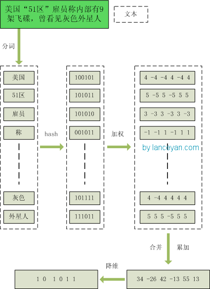
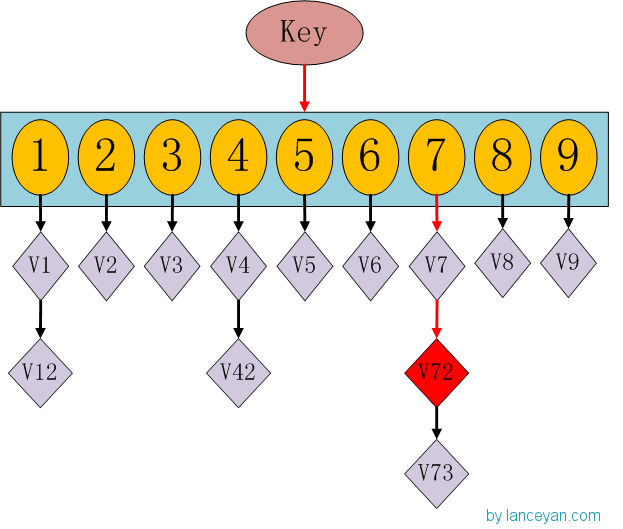
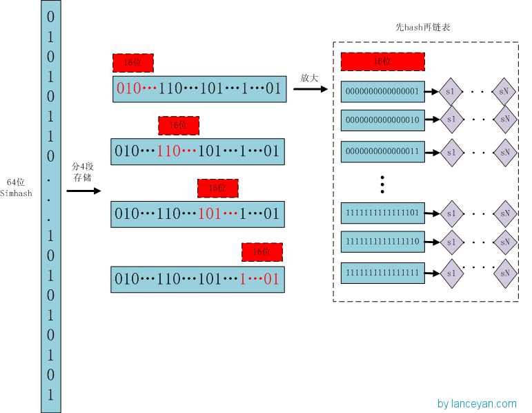
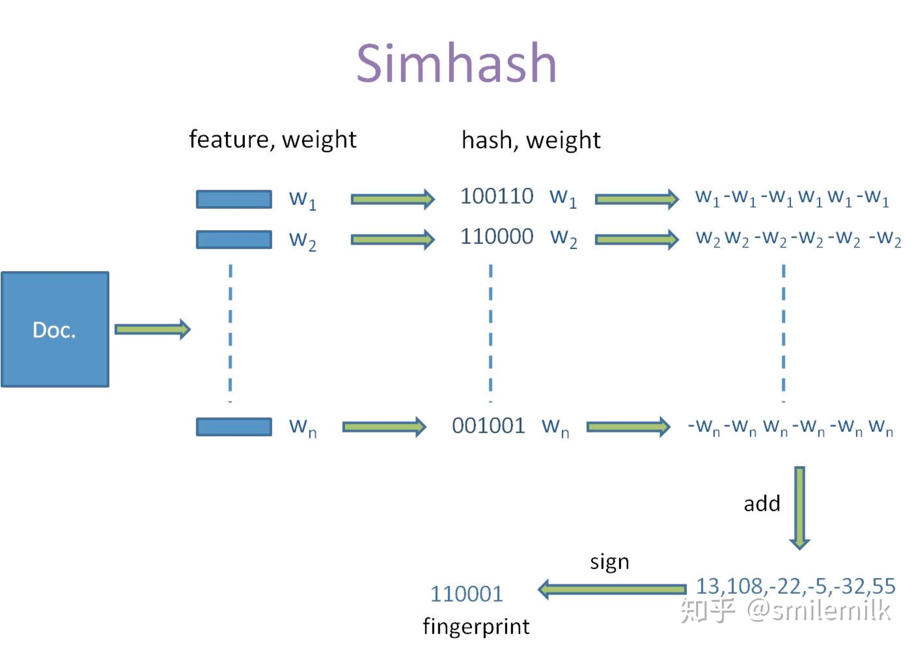
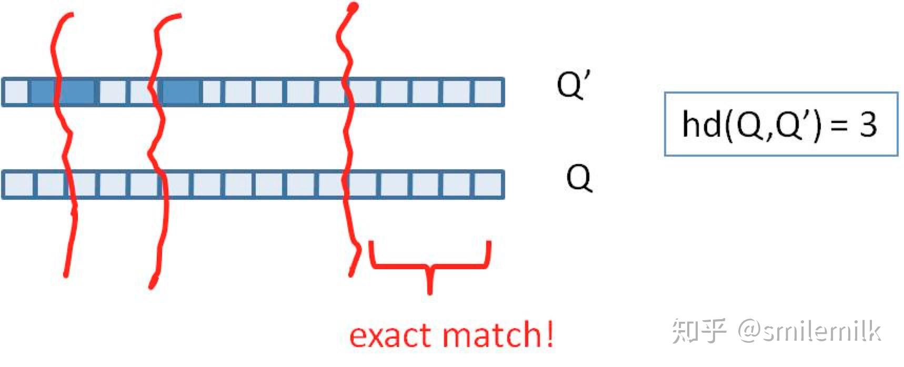
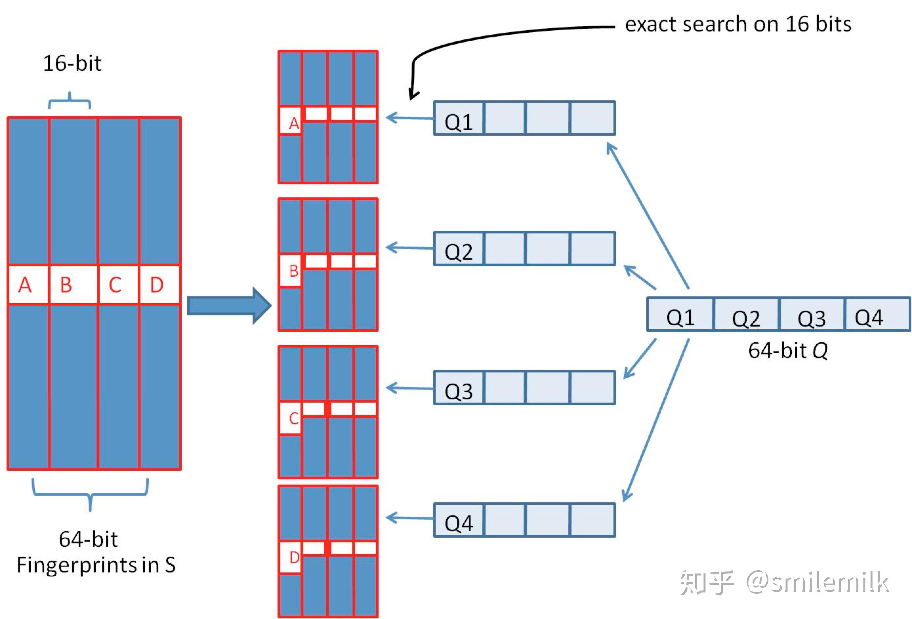
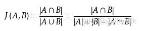
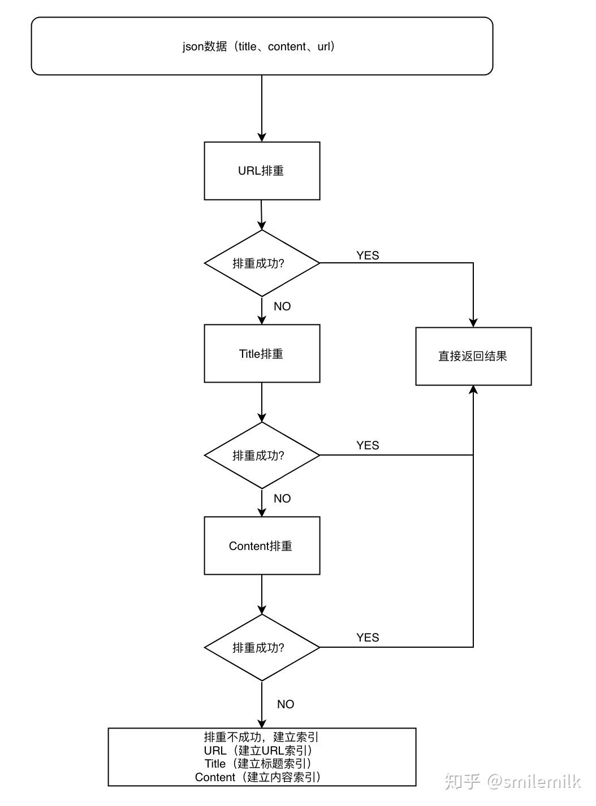

使用SimHash进行海量文本去重流程¶
对于类似于头条客户端而言，推荐的每一刷的新闻都必须是不同的新闻，这就需要对新闻文本进行排重。传统的去重一般是对文章的url链接进行排重，但是对于抓取的网页来说，各大平台的新闻可能存在重复，对于只通过文章url进行排重是不靠谱的，为了解决这个痛点于是就提出了用simhash来解决这个难题。
1.简介¶
传统的Hash算法只负责将原始内容尽量均匀随机地映射为一个签名值，原理上仅相当于伪随机数产生算法。即便是两个原始内容只相差一个字节，所产生的签名也很可能差别很大，所以传统的Hash是无法在签名的维度上来衡量原内容的相似度。而SimHash本身属于一种局部敏感hash，其主要思想是降维，将高维的特征向量转化成一个f位的指纹（fingerprint），通过算出两个指纹的海明距离（hamming distince）来确定两篇文章的相似度，海明距离越小，相似度越低（根据 Detecting Near-Duplicates for Web Crawling 论文中所说），一般海明距离为3就代表两篇文章相同。
simhash也有其局限性，在处理小于500字的短文本时，simhash的表现并不是很好，所以在使用simhash前一定要注意这个细节。
2.背景¶
如何设计一个比较两篇文章相似度的算法？可能你会回答几个比较传统点的思路:
- _一种方案是先将两篇文章分别进行分词，得到一系列特征向量，然后计算特征向量之间的距离（可以计算它们之间的欧氏距离、海明距离或者夹角余弦等等），从而通过距离的大小来判断两篇文章的相似度。 _
- 另外一种是传统hash，我们考虑为每一个web文档通过hash的方式生成一个指纹（finger print）。
下面我们来分析一下这两种方法:
- 采取第一种方法，若是只比较两篇文章的相似性还好，但如果是海量数据呢，有着数以百万甚至亿万的网页，要求你计算这些网页的相似度。你还会去计算任意两个网页之间的距离或夹角余弦么？那样做的话时间复杂度，空间复杂度可想而知。
- 而第二种方案中所说的传统加密方式md5，其设计的目的是为了让整个分布尽可能地均匀，但如果输入内容一旦出现哪怕轻微的变化，hash值就会发生很大的变化。
3.simhash与hash算法的区别¶
传统Hash算法只负责将原始内容尽量均匀随机地映射为一个签名值，原理上仅相当于伪随机数产生算法。传统hash算法产生的两个签名，如果不相等，除了说明原始内容不相等外，不再提供任何信息，因为即使原始内容只相差一个字节，所产生的签名也很可能差别很大，所以传统Hash是无法在签名的维度上来衡量原内容的相似度。而SimHash本身属于一种局部敏感哈希算法，它产生的hash签名在一定程度上可以表征原内容的相似度。
我们主要解决的是文本相似度计算，要比较的是两个文章是否相似，当然我们降维生成了hash签名也是用于这个目的。看到这里，估计大家就明白了，即使把文章中的字符串变成 01 串，我们使用的simhash算法也还是可以用于计算相似度，而传统的hash却不行。我们可以来做个测试，两个相差只有一个字符的文本串，“你妈妈喊你回家吃饭哦，回家罗回家罗” 和 “你妈妈叫你回家吃饭啦，回家罗回家罗”。
4.simhash原理¶
simhash是google用来处理海量文本去重的算法。 google出品，你懂的。 simhash最牛逼的一点就是将一个文档，最后转换成一个64位的字节，暂且称之为特征字，然后判断重复只需要判断他们的特征字的距离是不是<n（根据经验这个n一般取值为3），就可以判断两个文档是否相似。
在之前的两篇博文分别介绍了常用的hash方法（[Data Structure & Algorithm] Hash那点事儿）以及局部敏感hash算法（[Algorithm] 局部敏感哈希算法(Locality Sensitive Hashing)），本文介绍的SimHash是一种局部敏感hash，它也是Google公司进行海量网页去重使用的主要算法。
SimHash与传统hash函数的区别¶
传统的Hash算法只负责将原始内容尽量均匀随机地映射为一个签名值，原理上仅相当于伪随机数产生算法。传统的hash算法产生的两个签名，如果原始内容在一定概率下是相等的；如果不相等，除了说明原始内容不相等外，不再提供任何信息，因为即使原始内容只相差一个字节，所产生的签名也很可能差别很大。所以传统的Hash是无法在签名的维度上来衡量原内容的相似度，而SimHash本身属于一种局部敏感哈希算法，它产生的hash签名在一定程度上可以表征原内容的相似度。
我们主要解决的是文本相似度计算，要比较的是两个文章是否相识，当然我们降维生成了hash签名也是用于这个目的。看到这里估计大家就明白了，我们使用的simhash就算把文章中的字符串变成 01 串也还是可以用于计算相似度的，而传统的hash却不行。我们可以来做个测试，两个相差只有一个字符的文本串，“你妈妈喊你回家吃饭哦，回家罗回家罗” 和 “你妈妈叫你回家吃饭啦，回家罗回家罗”。
通过simhash计算结果为：
1000010010101101 1 11111100000101011010001001111100001 0 0101 1 001011
1000010010101101 0 11111100000101011010001001111100001 1 0101 0 001011
通过传统hash计算为：
0001000001100110100111011011110
1010010001111111110010110011101
大家可以看得出来，相似的文本只有部分 01 串变化了，而普通的hash却不能做到，这个就是局部敏感哈希的魅力。
SimHash算法思想¶
假设我们有海量的文本数据，我们需要根据文本内容将它们进行去重。对于文本去重而言，目前有很多NLP相关的算法可以在很高精度上来解决，但是我们现在处理的是大数据维度上的文本去重，这就对算法的效率有着很高的要求。而局部敏感hash算法可以将原始的文本内容映射为数字（hash签名），而且较为相近的文本内容对应的hash签名也比较相近。SimHash算法是Google公司进行海量网页去重的高效算法，它通过将原始的文本映射为64位的二进制数字串，然后通过比较二进制数字串的差异进而来表示原始文本内容的差异。
算法过程大致如下：
- 对文本分词，得到N维特征向量（默认为64维）
- 为分词设置权重（tf-idf）
- 为特征向量计算哈希
- 对所有特征向量加权，累加（目前仅进行非加权累加）
- 对累加结果，大于零置一，小于零置零
- 得到文本指纹（fingerprint）
（注：具体的事例摘自Lanceyan的博客《海量数据相似度计算之simhash和海明距离》）
-
1、分词 ，把需要判断文本分词形成这个文章的特征单词。最后形成去掉噪音词的单词序列并为每个词加上权重，我们假设权重分为5个级别（1~5）。比如：“ 美国“51区”雇员称内部有9架飞碟，曾看见灰色外星人 ” ==> 分词后为 “ 美国（4） 51区（5） 雇员（3） 称（1） 内部（2） 有（1） 9架（3） 飞碟（5） 曾（1） 看见（3） 灰色（4） 外星人（5）”，括号里是代表单词在整个句子里重要程度，数字越大越重要。
-
2、hash ，通过hash算法把每个词变成hash值，比如“美国”通过hash算法计算为 100101,“51区”通过hash算法计算为 101011。这样我们的字符串就变成了一串串数字，还记得文章开头说过的吗，要把文章变为数字计算才能提高相似度计算性能，现在是降维过程进行时。
-
3、加权 ，通过 2步骤的hash生成结果，需要按照单词的权重形成加权数字串，比如“美国”的hash值为“100101”，通过加权计算为“4 -4 -4 4 -4 4”；“51区”的hash值为“101011”，通过加权计算为 “ 5 -5 5 -5 5 5”。
-
4、合并 ，把上面各个单词算出来的序列值累加，变成只有一个序列串。比如 “美国”的 “4 -4 -4 4 -4 4”，“51区”的 “ 5 -5 5 -5 5 5”， 把每一位进行累加， “4+5 -4+-5 -4+5 4+-5 -4+5 4+5” ==》 “9 -9 1 -1 1 9”。这里作为示例只算了两个单词的，真实计算需要把所有单词的序列串累加。
-
5、降维 ，把4步算出来的 “9 -9 1 -1 1 9” 变成 0 1 串，形成我们最终的simhash签名。 如果每一位大于0 记为 1，小于0 记为 0。最后算出结果为：“1 0 1 0 1 1”。
整个过程的流程图为：

SimHash签名距离计算¶
我们把库里的文本都转换为simhash签名，并转换为long类型存储，空间大大减少。现在我们虽然解决了空间，但是如何计算两个simhash的相似度呢？难道是比较两个simhash的01有多少个不同吗？对的，其实也就是这样，我们通过海明距离（Hamming distance）就可以计算出两个simhash到底相似不相似。两个simhash对应二进制（01串）取值不同的数量称为这两个simhash的海明距离。举例如下： 1 01 01 和 0 01 10 从第一位开始依次有第一位、第四、第五位不同，则海明距离为3。对于二进制字符串的a和b，海明距离为等于在a XOR b运算结果中1的个数（普遍算法）。
SimHash存储和索引¶
经过simhash映射以后，我们得到了每个文本内容对应的simhash签名，而且也确定了利用汉明距离来进行相似度的衡量。那剩下的工作就是两两计算我们得到的simhash签名的汉明距离了，这在理论上是完全没问题的，但是考虑到我们的数据是海量的这一特点，我们是否应该考虑使用一些更具效率的存储呢？其实SimHash算法输出的simhash签名可以为我们很好建立索引，从而大大减少索引的时间，那到底怎么实现呢？
这时候大家有没有想到hashmap呢，一种理论上具有O(1)复杂度的查找数据结构。我们要查找一个key值时，通过传入一个key就可以很快的返回一个value，这个号称查找速度最快的数据结构是如何实现的呢？看下hashmap的内部结构：

如果我们需要得到key对应的value，需要经过这些计算，传入key，计算key的hashcode，得到7的位置；发现7位置对应的value还有好几个，就通过链表查找，直到找到v72。其实通过这么分析，如果我们的hashcode设置的不够好，hashmap的效率也不见得高。借鉴这个算法，来设计我们的simhash查找。通过顺序查找肯定是不行的，能否像hashmap一样先通过键值对的方式减少顺序比较的次数。看下图：

存储 ：
1、将一个64位的simhash签名拆分成4个16位的二进制码。（图上红色的16位）
2、分别拿着4个16位二进制码查找当前对应位置上是否有元素。（放大后的16位）
3、对应位置没有元素，直接追加到链表上；对应位置有则直接追加到链表尾端。（图上的 S1 — SN）
查找 ：
1、将需要比较的simhash签名拆分成4个16位的二进制码。
2、分别拿着4个16位二进制码每一个去查找simhash集合对应位置上是否有元素。
3、如果有元素，则把链表拿出来顺序查找比较，直到simhash小于一定大小的值，整个过程完成。
原理 ：
借鉴hashmap算法找出可以hash的key值，因为我们使用的simhash是局部敏感哈希，这个算法的特点是只要相似的字符串只有个别的位数是有差别变化。那这样我们可以推断两个相似的文本，至少有16位的simhash是一样的。具体选择16位、8位、4位，大家根据自己的数据测试选择，虽然比较的位数越小越精准，但是空间会变大。分为4个16位段的存储空间是单独simhash存储空间的4倍。之前算出5000w数据是 382 Mb，扩大4倍1.5G左右，还可以接受
SimHash存储和索引¶
1. 当文本内容较长时，使用SimHash准确率很高，SimHash处理短文本内容准确率往往不能得到保证；
2. 文本内容中每个term对应的权重如何确定要根据实际的项目需求，一般是可以使用IDF权重来进行计算。
具体流程实现
simhash的算法具体分为5个步骤： 分词 、 hash 、 加权 、 合并 、 降维 ，具体过程如下：
1.分词
- 给定一段语句或者一段文本，进行分词，得到有效的特征向量，然后为每一个特征向量设置一个5个级别（1—5）权值。例如给定一段语句：“生活本没有路，走的人多了就成了路，要相信阳光总在风雨后”，分词后结果为：生活 没有 成了 相信 阳光 风雨，然后为每个特征向量赋予权值： 生活(5) 没有(2) 成了(1) 相信(2) 阳光(3) 风雨(2)，其中括号里的数字代表这个单词在整条语句中的重要程度，数字越大代表越重要。
2.hash
- 通过hash函数计算各个特征向量的hash值，hash值为二进制数01组成的n-bit签名。比如“生活”的hash值Hash(生活)为110101，“没有”的hash值Hash(没有)为“101001”。就这样，字符串就变成了一系列数字。
3.加权
- 在hash值的基础上，给所有特征向量进行加权，即W = Hash * weight，且遇到1则hash值和权值正相乘，遇到0则hash值和权值负相乘。例如给“生活”的hash值“110101”加权得到：W(生活) = 110101 5 = 5 5 -5 5 -5 5，给“没有”的hash值“101001”加权得到：W(没有)=101001 2 = 2 -2 2 -2 -2 2，其余特征向量类似此般操作。
4.合并
- 将上述各个特征向量的加权结果累加，变成只有一个序列串。拿前两个特征向量举例，例如“生活”的“5 5 -5 5 -5 5”和“没有”的“2 -2 2 -2 -2 2”进行累加，得到“5+2 5-2 -5+2 5-2 -5-2 5+2”，得到“7 3 -3 3 -7 7”。
5.降维
- 对于n-bit签名的累加结果，如果大于0则置1，否则置0，从而得到该语句的simhash值，最后我们便可以根据不同语句simhash的海明距离来判断它们的相似度。例如把上面计算出来的“9 -9 1 -1 1 9”降维（某位大于0记为1，小于0记为0），得到的01串为：“1 1 0 1 0 1”，从而形成它们的simhash签名。
整个过程的流程图为：

5、simhash的签名距离计算¶
我们把库里的文本都转换为simhash签名，并转换为long类型存储，空间大大减少。现在我们虽然解决了空间，但是如何计算两个simhash的相似度呢？难道是比较两个simhash的01有多少个不同吗？对的，其实也就是这样，我们通过海明距离（Hamming distance）就可以计算出两个simhash到底相似不相似。两个simhash对应二进制（01串）取值不同的数量称为这两个simhash的海明距离。举例如下： 10101 和 00110 从第一位开始依次有第一位、第四、第五位不同，则海明距离为3。对于二进制字符串的a和b，海明距离为等于在a XOR b运算结果中1的个数（普遍算法）。
我们可以把 64 位的二进制simhash签名均分成4块，每块16位。根据鸽巢原理（也称抽屉原理），如果两个签名的海明距离在 3 以内，它们必有一块完全相同。如下图所示：

6、simhash的存储和查找¶
- 我们需要将64位simhash均分为4份，然后每份作为key存储到redis
- 采用精确匹配的方式查找前16位
- 找到则拿出来计算与被比较的simahsh距离，小于3则判断为相似（当然具体问题具体分析，这个值可以调整）
- 如果样本库中存有234（差不多10亿）的哈希指纹，则每个table返回2(34-16)=262144个候选结果，大大减少了海明距离的计算成本

7、聊聊Jaccard相似度与汉明距离¶
7.1 Jaccard相似度¶
Jaccard 系数，又叫Jaccard相似性系数，用来比较样本集中的相似性和分散性的一个概率。 公式：

给定两个集合A,B jaccard 系数定义为A与B交集的大小与并集大小的比值，jaccard值越大说明相似度越高
7.2 汉明距离¶
在信息理论中，Hamming Distance 表示两个等长字符串在对应位置上不同字符的数目，我们以d(x, y)表示字符串x和y之间的汉明距离。从另外一个方面看，汉明距离度量了通过替换字符的方式将字符串x变成y所需要的最小的替换次数。
举例说明以下字符串间的汉明距离为：
- "karolin" and "kathrin" is 3.
- "karolin" and "kerstin" is 3.
- 1011101 and 1001001 is 2.
- 2173896 and 2233796 is 3.
8、【实战】新闻文本去重服务详细流程¶
本文将文本排重做成了一个接口，首先给去重接口传一些必要的参数，针对新闻文本为例（url:链接 title:文本标题 content:内容）。依次是进行url排重、title排重、content排重，
如果三种都没有找到，则建立url、title、content索引存储到redis。具体流程图如下：

¶
8.1、URL排重
1.建立URL索引：
1 2 | |
2.根据urlMD5从redis查找数据，找到则排重成功返回docId，没有找到则排重失败。
8.2、Title排重¶
- 建立Title索引：
1 2 | |
2. 根据titleMD5从redis查找数据，找到则排重成功返回docId，没有找到则排重失败。
¶
8.3、Content排重
1. 建立Content索引：
1 2 3 4 | |
1.然后将这4份索引存储到redis(LIST)
2.根据simHashFragment索引从redis里面查找（4份simhash索引都得一起召回）
3.将召回的值依次与带排重的文本比对
* hanmingDistance<=H 并且 jarccardSimilary>=J 召回(一般设置H=10,J=0.7 具体情况具体分析) 注：三天内新闻做法
* hanmingDistance<=3 并且 jarccardSimilary>=0.7 注：三天外新闻做法
4.将召回的新闻做rank（这里不细讲，方法很多），TOP1作为排重的新闻
9、总结¶
现如今是一个信息过载的时代，高效的从海量文本里面快速找到相似的文本是一个需要解决的一个痛点，simhash的存在就很好的解决了这个问题。
由于simhash是局部敏感的hash，其可能不适合做这种短标题的重复度判断，会存在一定的误差，文本越长判断的准确率越高。
10、参考资料¶
1) 严澜的博客《海量数据相似度计算之simhash短文本查找》
2) 《Similarity estimation techniques from rounding algorithms》
凡本网注明"来源：XXX "的文/图/视频等稿件，本网转载出于传递更多信息之目的，并不意味着赞同其观点或证实其内容的真实性。如涉及作品内容、版权和其它问题，请与本网联系，我们将在第一时间删除内容！
作者: smilemilk, tianjinsong
来源： https://zhuanlan.zhihu.com/p/71488127 https://blog.csdn.net/bluetjs/article/details/95628742